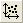
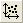

Die Rohdaten und die angepasste Kurve werden auf der Registerkarte Fit-Kurve gezeichnet. Diese Registerkarte ist nur aktiv, wenn das Kontrollkästchen Vorschau auf Quelldiagramm zeigen der Angepassten Kurven (Registerkarte Einstellungen) aktiviert ist. Die drei Schaltflächen 
  befinden sich im Diagramm zum Verkleinern, Vergrößern und Neuskalieren der Kurve.
 befinden sich im Diagramm zum Verkleinern, Vergrößern und Neuskalieren der Kurve.